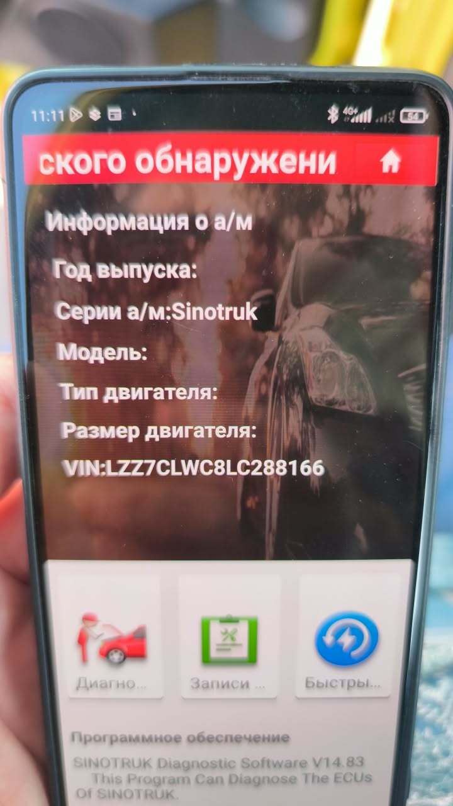

🚛 Sinotruk 2018 — диагностика грузовика перед покупкой: ошибки топливной системы, масла и AdBlue
Поступила заявка на выездную диагностику грузового автомобиля Sinotruk 2018 года выпуска перед покупкой.
Покупателю предварительно рекомендовали самостоятельно осмотреть автомобиль, запустить двигатель, послушать его работу и совершить пробную поездку.
После проверки покупателя всё устроило, и он заказал выезд специалиста для компьютерной диагностики электронных систем грузовика.
💻 Компьютерная диагностика Sinotruk перед покупкой

После прибытия подключили диагностическое оборудование и выполнили проверку электронных блоков автомобиля.
В памяти системы управления двигателем обнаружили несколько сохранённых ошибок:
⚠️ Ошибки, связанные с давлением топлива.
⚠️ Ошибки по давлению моторного масла.
⚠️ Неисправность системы AdBlue (мочевины).
Наличие сохранённых ошибок не всегда означает, что неисправности присутствуют в данный момент. Поэтому важно проверить, какие коды появятся повторно после очистки памяти.
🔍 Проверка электронных систем грузовика
В ходе диагностики проверили доступные электронные блоки управления и зафиксировали обнаруженные неисправности.
После этого выполнили сброс ошибок и повторную компьютерную диагностику.
Результат повторной проверки:
✅ Ошибки по давлению топлива больше не появились.
✅ Ошибки по давлению масла не повторились.
⚠️ Осталась только ошибка системы AdBlue.
При этом сохранённая неисправность мочевинной системы на момент проверки не вызывала ограничения скорости автомобиля.
Покупателю объяснили, что отсутствие повторных ошибок по топливу и маслу не исключает необходимости проверки соответствующих параметров при дальнейшей эксплуатации.
⚙️ Настройка ограничения скорости Sinotruk
Дополнительно по согласованию с заказчиком выполнили изменение настройки ограничения скорости автомобиля.
Цель — обеспечить более удобную эксплуатацию грузовика при движении на подъёмах и выполнении обгонов.
После изменения настройки проверили работу электронной системы управления.
Важно: эксплуатация грузового автомобиля должна соответствовать установленным требованиям безопасности, техническим характеристикам и действующим ограничениям скорости.
💰 Ошибка AdBlue помогла договориться о цене
После повторной диагностики покупатель получил информацию о состоянии электронных систем автомобиля.
Поскольку ошибка системы AdBlue осталась активной, этот момент обсудили с продавцом.
Стороны договорились учесть возможные расходы на устранение неисправности AdBlue при окончательном расчёте стоимости автомобиля.
Таким образом, компьютерная диагностика помогла покупателю не только оценить техническое состояние грузовика, но и аргументированно обсудить цену покупки.
✅ Итог выполненной работы
🚛 Автомобиль: Sinotruk 2018 года
🚐 Услуга: диагностика приобретаемого автомобиля с выездом
🔍 Предварительная проверка: запуск двигателя и пробная поездка покупателем
💻 Компьютерная диагностика: проверены доступные электронные системы
⚠️ Первоначальные ошибки: давление топлива, давление масла, AdBlue
🔄 После сброса: повторилась только ошибка системы AdBlue
⚙️ Дополнительная работа: изменение настройки ограничения скорости
💰 Результат переговоров: неисправность AdBlue учтена при согласовании стоимости
✅ Работа выполнена, покупатель получил результаты диагностики и рекомендации.
🚐 Диагностика грузового автомобиля перед покупкой
Покупка подержанного грузовика без компьютерной диагностики может привести к непредвиденным расходам.
Даже если двигатель запускается, автомобиль нормально едет и внешне выглядит исправным, в памяти электронных блоков могут находиться ошибки топливной системы, двигателя, трансмиссии и AdBlue.
Выполняем:
💻 Компьютерную диагностику грузовых автомобилей перед покупкой.
🔍 Проверку сохранённых и текущих ошибок.
⚙️ Анализ доступных параметров двигателя.
🔄 Повторную диагностику после сброса ошибок.
🚐 Выезд к автомобилю перед покупкой.
Случай с Sinotruk 2018 показывает, что диагностика перед покупкой помогает выявить возможные расходы на ремонт и использовать полученную информацию при обсуждении окончательной стоимости автомобиля.
Читайте также: «Sinotruk 2025 — диагностика перед покупкой, проверка VIN, пробега и GSM/GPS» и «DAF 106 перед покупкой — диагностика выявила пробег более 1 млн км».